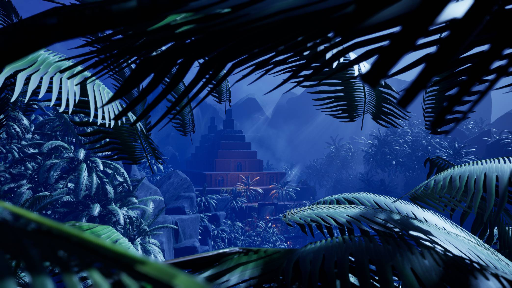

Lefty
Lefty is a 2D platformer based around the simple idea of "what would happen if all of a sudden, a right-handed person was forced to become left-handed".

Corporate Ladder Inc.
Corporate Ladder Inc. is a light-hearted puzzle platformer. In it, the player controls "The CEO" who needs to climb back to the top of his tower to reclaim his title.

Explorers of the Weird Unknown
Explorers of the Weird Unknown is a procedural, feature complete Tabletop RPG made with a simple to learn and simple to play mentality.

Boomer Fragfest
Boomer Fragfest is a demo made for my Game & Level Design class, inspired by the classics of John Romero and John Carmack.

Echoes of the Temple
Echoes of the Temple is a first-person adventure/puzzle game made as a team effort over two months.